The database provides seven data visualization pages covering full-length transcriptome, SNP, gene expression, annotation, transcription factor regulation, and molecular docking results.
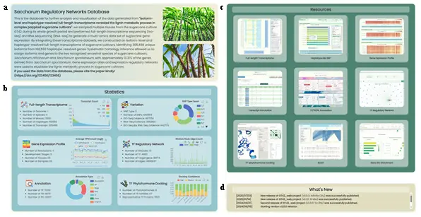
- This page provides an overview of the research and database content, allowing users to quickly browse database information and navigate to functional pages. It contains the following sections:
- Research Introduction and Citation Section (Fig.1a): Presents the abstract and citation information of the unpublished article corresponding to the deposited datasets.
- Data Statistics Section (Fig.1b): Lists brief statistical information of the database, presented using six sub-sections in a 2-2-2 vertical layout. In all sub-sections, the left side displays text-based statistics and the right side displays interactive charts implemented with ECharts. The six sub-sections cover: Full-length Transcriptome (scatter plot), Variation (donut pie chart), Gene Expression Profile (line chart), TF Regulatory Network (stacked bar chart), Annotation (donut pie chart), and TF Phytohormone Docking (stacked bar chart).
- Resource List Section (Fig.1c): Displays the appearance of 7 data pages and 2 functional pages in a 3-3-3 vertical layout, using pre-recorded GIF images to demonstrate core functional operations. Clicking navigates to the corresponding page.
- News List Section (Fig.1d): Displays the update log of website development content.
- Page Architecture Logic: The purpose of the homepage is to enable first-time visitors to quickly understand the website's information and functional overview, and provide intuitive guidance so users can reach target pages with minimal learning cost. The paper abstract introduces the research background, the statistics overview uses ECharts for animated visualizations, the resource page list embeds pre-recorded demonstrations, and the news list provides development feedback.
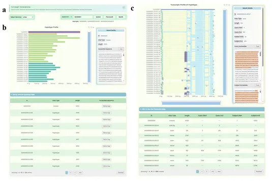
- Displays the decomposition relationships from haplotype mosaic genes to haplotype genes across multi-resolution levels, as well as the alternative splicing structures of transcripts for each gene. It mainly contains the following sections:
- Search Section (Fig.2a): The left-side Select Genome component uses a dropdown to select the genome. The right-side Search ID composite component provides help (valid ID input types, ID lists), an input box, a submit button, sequential ID switching buttons, and an example button.
- "Haplotype Profile" Section (Fig.2b): Divided into three sub-sections with a 2-1 vertical layout. The upper-left uses ECharts custom functions to implement horizontal bar charts showing the correspondence between haplotype mosaic genes, xenologous mosaic genes, and haplotype genes. The topmost blue bar represents the mosaic gene, and all bars below it represent haplotype genes separated from this mosaic gene. Colors represent xenologous subtype classification (teal for S. officinarum, dark green for S. spontaneum, brown for unknown homology). The right side is a "Result Details" information panel with raw sequence copy function. Below is the corresponding information table with pagination, download functionality, and inline sequence copy.
- "Transcripts Profile of Haplotype" Section (Fig.2c): Also divided into three sub-sections with a 2-1 vertical layout. The bar chart shows all alternative splicing patterns for a given gene. Exons are represented by light blue bars, introns by narrower light yellow bars, insertions by purple arrows, deletions by narrower black bars, and softClip regions by green arrows. Transcript positions are aligned with the actual positions of their parent genes.
- User Operation Steps: Users can check supported ID formats from the help button, enter an ID and submit, or click Previous/Next buttons. The "Haplotype Profile" section displays the bar chart of haplotype mosaic genes and haplotype genes. The "Transcripts Profile of Haplotype" section displays corresponding alternative splicing patterns. Users can interact by clicking on ECharts charts, hover over elements for details, adjust the chart range using zoom toolbars, and use function buttons for area selection and image download.
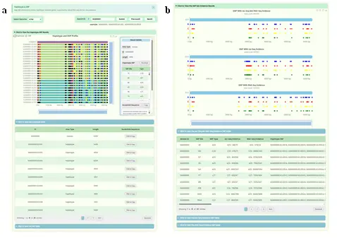
- Displays the global distribution of SNP sites on haplotype mosaic genes and their precise localization on individual haplotype genes, and provides RNA-seq and Iso-seq dual-platform evidence information for each SNP site. It mainly contains the following sections:
- Search Section: Uses the same search component as the Full-length Transcriptome page.
- "Haplotype SNP Profile" Section (Fig.3a): Uses a similar layout to the "Haplotype Profile" section. The ECharts bar chart shows haplotype mosaic genes, xenologous mosaic genes, and haplotype genes that are full-length aligned. All bars have the same length as the haplotype mosaic gene to annotate the corresponding SNP type at each lower-resolution level for unified column-wise display. The "Result Details" panel shows different information depending on whether the user clicks on a mosaic gene bar, a haplotype gene, or a specific SNP site. Below are two information tables for haplotype information and SNP site information respectively.
- "SNP Evidence" Section (Fig.3b): Contains one ECharts custom chart and three table modules. The chart includes three horizontal bar-scatter combination charts representing SNP sites supported by both Iso-seq and RNA-seq, only Iso-seq, and only RNA-seq. The zoom interaction of all three charts is synchronized, and the mouse automatically snaps to the nearest site.
- User Operation Steps: Users can search for genes of interest at any resolution level. The "Haplotype SNP Profile" section shows genotype patterns mapped to each haplotype gene. The "SNP Evidence" section lists sequencing evidence supporting each SNP site. Users can download charts or table data for further analysis.
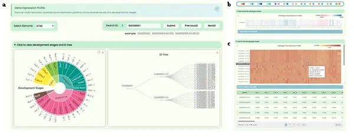
- Displays expression distribution profiles of genes across 69 samples from 23 tissues/organs across 5 developmental stages at four resolution levels. It mainly contains the following sections:
- Search Section: Uses the same search component as the Full-length Transcriptome page.
- "Development Stages and ID Tree" Section (Fig.4a): Contains two ECharts visualization sub-sections side by side. The left side uses a sunburst chart to display the developmental stage and tissue name information for all samples (three levels: developmental stages, tissue names, sample IDs). The right side uses a tree diagram to display the four-resolution ID hierarchy (haplotype mosaic gene → xenologous mosaic gene → haplotype gene → transcript ID).
- Expression Heatmap Section (Fig.4b/c): Uses four identically structured containers to sequentially display gene expression at four resolution levels. Each container includes an ECharts heatmap and its corresponding data table. The horizontal axis represents tissue IDs and the vertical axis represents gene IDs. Features include crosshair guide lines, a horizontal color bar for adjusting the data range, and a color palette toolbar with 12 heatmap color schemes.
- User Operation Steps: Users can search for genes at any resolution level, view sample information in the sunburst chart, understand ID correspondence in the ID tree, and view heatmaps for each resolution level with adjustable color schemes. Data can be downloaded from the tables.
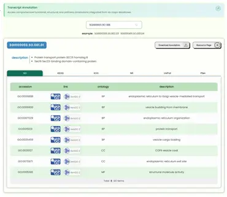
- Presents annotation information of transcripts across three types of databases in tabular form, and provides hyperlinks to external professional databases. It is divided into two sections:
- Search Section: Supports searching by ID at any resolution level, but since annotation data originates only from transcripts, only transcript-level annotation information will be displayed.
- Table Section: Uses a card-style layout to provide three types of annotation information from six datasets within a single table container. Users can switch between table results by toggling the tabs. Each column header has a hover tooltip explanation. The second column contains external database links (GO: QuickGO and AmiGO2; KEGG: KEGG; KOG: NCBI; NR: NCBI; UniProt: UniProt; Pfam: InterPro). In-table scrolling is used instead of pagination. Above the table, download functionality and a resource detail page redirect function are provided.
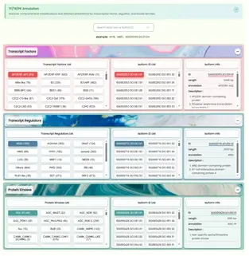
- Displays all transcription factors, transcriptional regulators, and protein kinases along with their detailed functional annotations. It is divided into the following sections:
- Search Section: Supports searching by ID at any resolution level as well as by specific type names. Since annotation data originates only from transcripts, only transcript-level annotation information will be displayed.
- Data Table Section: Three sections use the same structure, displaying information lists for transcription factors, transcriptional regulators, and protein kinases respectively. Each section is divided into a factor category list (button-style with member counts), a transcript list, and a transcript annotation information list with a redirect function. All three sections use detail tags for expand/collapse functionality, with only the transcription factor section expanded by default.
- User Operation Steps: Users can enter an ID or factor family name in the search box, and the frontend will navigate to the corresponding data section, expand it, and select the appropriate button. Users can also directly explore the three data sections. Clicking any button refreshes the annotation information, and the ID redirect function allows navigation to the resource page.
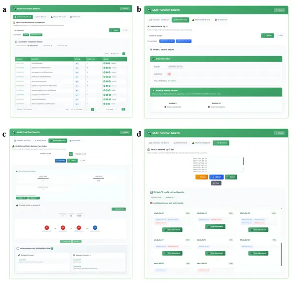
- Displays 61 transcription factor-gene co-expression regulatory networks in a modular format, with support for multiple search functions. It mainly contains the following sections:
- Multi-function Search Section (Fig.7): Provides 4 search modes:
- "Annotation Text Search" (Fig.7a): Searches the user's input text across GO functional annotations of all modules. Results list matched annotations and module lists. Clicking a module ID highlights it in the "Module Selection" list.
- "ID Search" (Fig.7b): Checks what attributes the user's input ID has and which modules it belongs to. After clicking a result, the regulatory network centered on that ID is drawn.
- "Shortest Path Search" (Fig.7c): After entering two IDs, uses a BFS algorithm to find all shortest paths between them within qualifying modules. Users can click nodes along the path to view GO functional annotation information.
- "ID Set Search" (Fig.7d): Supports input of a list, drag-and-drop, or file upload. The system checks which modules each ID belongs to and provides a "Draw Subnetwork" button for each result.
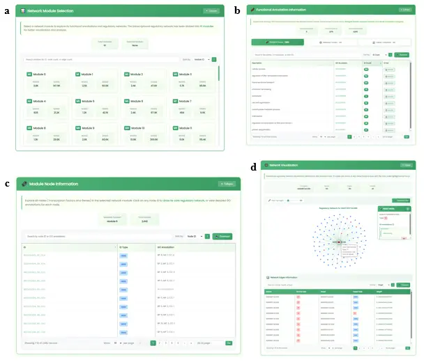
- Main Result Display (Fig.8): The four result sections are:
- Module Selection Section (Fig.8a): Presents overview information for 61 network modules (module ID, node and edge counts) with interactive selection. Supports sorting and fuzzy search.
- Functional Annotation Information Section (Fig.8b): Card-style tab switching for BP/MF/CC tables with pagination, sorting, download, and fuzzy search. Clicking "GO accession" navigates to AmiGO2. Clicking "ID list" displays a popup with TF and Gene ID lists.
- Module Node Information Section (Fig.8c): Displays all node IDs and GO annotation information within the selected module. Clicking an ID draws its centered regulatory network.
- Network Visualization Section (Fig.8d): Uses ECharts to draw regulatory networks. Provides a network filter slider (1-500) and chart download. TF nodes are red, Gene nodes are gray. Clicking a node shows GO annotation with a "Draw Core Network" button.
- User Operation Steps: The page divides into search and main content areas. Users can use annotation text search, ID search, shortest path search, or ID set search. In the main content area, users can browse module lists, view GO function lists, and trigger node-centered regulatory network drawing with unlimited link exploration.
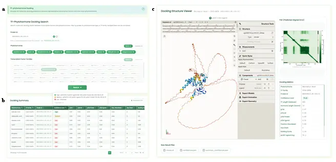
- Displays 3D visualization of molecular docking prediction results between 5,601 representative proteins from 67 transcription factor families and 9 plant hormones. It is mainly divided into the following sections:
- Search Section (Fig.9a): Contains a transcription factor ID search box, a hormone selection box, and a transcription factor family selection box. Users can select/deselect multiple options with select all/deselect all functionality. If the ID search box is not empty, the family selection box buttons are disabled. At the bottom is a submit button with input validation.
- Statistics Table Section (Fig.9b): Retrieves data from the backend and displays filtered results. Every column supports ascending/descending sorting with multi-column combination sorting. The table provides pagination and CSV download. The protein_id is clickable to show docking structures in the 3D display section. All column headers include hover tooltips.
- 3D Structure Display Section (Fig.9c): Divided into four sub-sections. The left section uses the Molstar frontend library for 3D docking structure display with pLDDT coloring. The upper-right displays the PAE matrix visualization with a full-screen zoom interface. The lower-right shows docking parameter details. Below the 3D display, download functionality for three raw result files is provided.
- User Operation Steps: Users can search by specific transcription factor ID or select combinations of hormones and transcription factor families. The statistics table supports combination sorting and term definitions. Users can select an ID to visualize 3D docking structures using the Molstar plugin, view PAE heatmaps, and download raw files for independent analysis.
The database provides two online analysis tool pages for sequence alignment and functional enrichment analysis.
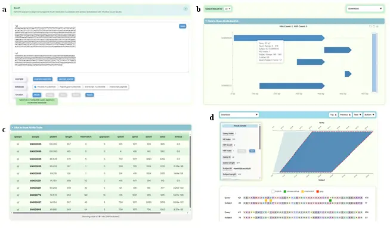
- Provides an online alignment search service based on the sequence sets in this database, supporting sequence similarity searches across three resolution levels of nucleotide databases and one protein database, with graphical presentation of alignment results. It is mainly divided into a search section and a results display section:
- Search Section (Fig.10a): Contains a data input box, example buttons, dataset checkboxes, and algorithm buttons. The data input box is a resizable rich text box with a clear function. Users can paste FASTA-formatted query sequences or drag and drop files. After valid input is detected, the "database" multi-select box automatically opens. The system determines compatible BLAST functions and enables corresponding buttons.
- Results Display Section: Contains two top tools (query ID switching and raw
result file download in three formats) and three sub-sections:
- Hit Bar Chart (Fig.10b): Visualizes alignment results showing all matching intervals. The x-axis represents query sequence length, the y-axis represents subject sequence IDs. Each bar indicates a matching region. Users can hover for details, zoom, and click to navigate to pairwise alignment details.
- Hits Table (Fig.10c): Displays alignment data with abbreviated column headers (hover for full titles). Subject IDs are hyperlinked to the global search page.
- Hits Pairwise Alignment Details (Fig.10d): Each Hit contains a download dropdown (6 formats), navigation buttons (Top/Previous/Next/Bottom), a Result Details Card with HSP switching, a Matching Region Chart showing forward matches as quadrilaterals and reverse matches as hourglass shapes, and colorful Sequence Alignment Text Results. Uses lazy loading (10 Hits at a time) for performance.
- User Operation Steps: Users enter sequences, select target datasets, choose a BLAST algorithm, and submit. After completion, they can view the full-dataset matching bar chart, click bars to navigate to pairwise alignment details, view base/residue-level matching, and download raw data. Multiple query sequences can be switched via the top button.
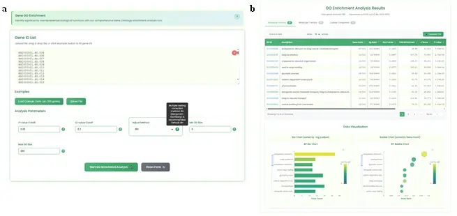
- Provides a gene set functional enrichment analysis service based on GO functional annotation datasets at the haplotype gene resolution across the whole genome. It supports user-customized gene lists and test parameters:
- Search Section (Fig.11a): Contains an input box (resizable rich text with clear function, file drag-and-drop), example buttons, and a parameter configuration area with five adjustable parameters: pvalueCutoff, qvalueCutoff, adjustMethod, minGSSize, and maxGSSize. Default values are provided. A task submit button and reset button are included.
- Results Display Section (Fig.11b): Contains:
- Statistics Table Section: Card-style layout for BP/MF/CC GO functional levels. Features frontend pagination, horizontal scrolling, GO accession hyperlinks to AmiGO2, interactive gene ID popups with copy function, TSV download, search filtering, and sortable numerical columns.
- Chart Visualization Section: ECharts horizontal bar charts and bubble charts implementing the two most common GO enrichment visualization methods. Bar charts use gene Count on the x-axis, bubble charts use GeneRatio. VisualMap maps p.adjust values to colors with negative log transformation. DataZoom allows mouse wheel interaction. Statistics table and charts are linked: switching table types redraws the corresponding charts.
- User Operation Steps: Users enter a gene ID set, optionally adjust parameters, and submit. Results include MF/BP/CC level enrichment in switchable tabs with fuzzy search, sorting, and download. GO terms link to AmiGO2, and the ECharts section updates with corresponding data when switching table types.
The database includes several auxiliary features that enhance user experience, including global search, download, navigation, and various interaction aids.
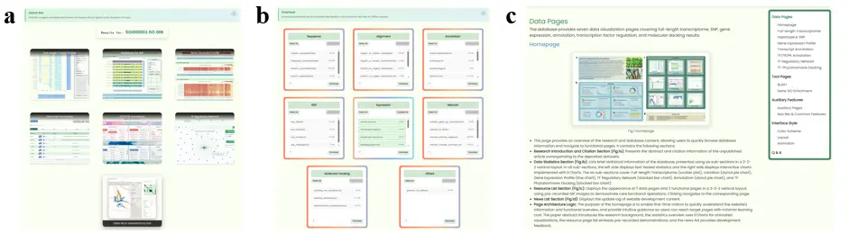
- Global Search Page (Fig.12a): Provides a "resource hub" function for redirecting genome IDs to other pages. Displays redirect link containers for 7 data visualization pages. If the entered ID format is supported by a particular page, that container becomes clickable. Every functional page can redirect to this global search page with automatic ID filling.
- Download Page (Fig.12b): Provides online download functionality for all raw datasets. Each container represents one type of dataset with multi-select download functionality and descriptions with command-line download links.
- Tutorial Page (Fig.12c): This page provides the most detailed website usage tutorial, introducing page features and user operation steps in page order, with an appended Q&A section. A floating navigation table of contents component on the right side is linked to the current tutorial position for quick navigation.
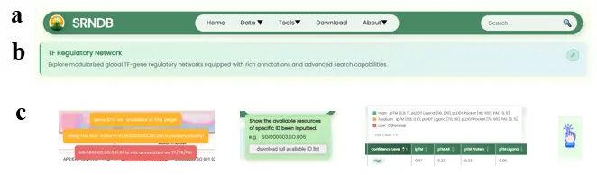
- Navigation Bar (Fig.13a): All pages have a floating, centered, fixed navigation bar at the top. The far left contains the website name and icon, the center features an accordion-style menu bar, and the right side contains a global search box. The navigation bar uses responsive design; when zoomed to a certain level, the menu bar and search box collapse with an expand button.
- Per-page Top Introduction (Fig.13b): Every functional page except the tutorial page has an introduction container at the top with the page name and a brief introductory sentence, plus a redirect icon to the corresponding section in the tutorial page.
- Help Information (Fig.13c): The website extensively uses help information popups (both active and passive types) to provide supplementary explanations while maintaining the overall design style of simplicity and elegance. State changes are communicated through temporary floating notification messages.
- Example Functionality: All input components are equipped with one-click example filling. Some complex search components implement logical masking of associated components to intuitively demonstrate valid data input formats.
- Input Validation: All input components have frontend validation mechanisms. API assembly and backend data requests are initiated only after frontend validation succeeds, reducing invalid backend requests.
- Page Scrolling: Multiple pages implement dynamic page scrolling to ensure the latest data results remain at the center of the screen. A floating "back to top" button enables quick return to the search component at the top.
- Statistical Visualization: The website extensively uses the ECharts library for diverse data visualization, combined with custom function capabilities for bioinformatics visualization approaches.
- Download Functionality: Nearly all visualization interfaces and data containers provide download functionality, with a dedicated download page for all raw data.
- Traffic Statistics: A ClustrMaps traffic statistics component is configured at the bottom to track visit traffic and regional origins.
The database's interface design follows consistent principles across color, layout, and animation to deliver a professional and aesthetically pleasing user experience.
- The database's color scheme follows the common three-color principle. To highlight the characteristics of the sugarcane dataset, green, blue, and yellow are used as primary colors, with gradient colors as the blending method. Morandi tones lower the overall color saturation to emphasize academic rigor. This systematic color scheme ensures style consistency across all pages while maintaining color diversity.
- The database uses a fixed layout, abandoning responsive layout since bioinformatics databases are generally not viewed on narrow-screen devices. A fixed content area width ensures layout consistency. Nearly all rectangular containers use rounded corners with shadows for softness and three-dimensionality. Content elements use symmetrical layouts with core functional sections enlarged to highlight key elements.
- Most components implement interactive animation effects. Every hover, click, and loading wait provides smooth animation feedback. All animation designs follow the principles of elegance, simplicity, and aesthetics. The ECharts library maximizes both rigor and aesthetic appeal of visualizations, providing powerful custom function capabilities and rich community support.
- Why is the website layout wider than usual? How can I adjust the browser's width settings?
-
Our website features rich visual elements designed to provide the best experience on screens
with a normal desktop width. While the site is accessible on mobile devices, the browsing
performance on mobile may not deliver the optimal visual experience. Therefore, we recommend
using a computer display with a width greater than 1400px for the best results visualization.
If the website appears too wide in your browser, you can adjust the browser's zoom settings to
resize the layout:
- For Windows: Use "Ctrl" + "+" to zoom in or "Ctrl" + "-" to zoom out. You can also use "Ctrl" + mouse wheel up/down.
- For MacOS: Use "Command (⌘)" + "+" to zoom in or "Command (⌘)" + "-" to zoom out. Alternatively, use "Command (⌘)" + mouse wheel up/down.